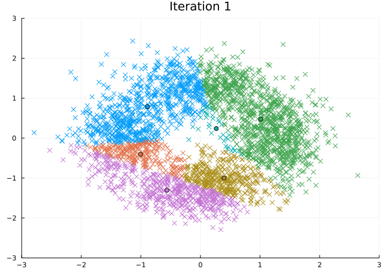

K-means from scratch
A step-by-step walkthrough of a simple clustering algorithm
In a nutshell
This is my attempt at coding \(K\)-means from scratch. I have used the pseudocode from this handout on AI systems as a starting point but so far not looked into optimized solutions. I can already think of a few improvements which would affect efficiency though, so this version is certainly clunkier and slower than necessary. 🐢
Let’s begin by describing the goal of \(K\)-means mathematically.
\[ \text{minimize} \ \sum_{i=1}^n \| \mathbf{x}_i - \boldsymbol{\mu}_{z_i} \|^2 \ \text{w.r.t.} \ (\boldsymbol{\mu}, z) \]
In this equation, \(\boldsymbol{\mu}_k\) is the center of the \(k\)-th cluster, and \(z_i\) is an index of the cluster for \(i\)-th point \(\mathbf{x}_i\). I have also seen \(K\)-means being described as a coordinate-descent algorithm, but I am not yet deep enough into the terminology to understand that well.
Coding K-means
I will start by laying out the general structure of the algorithm and then defining its components one by one.
Main function
function kmeans(k, X; max_iter=1000, seed=42)
# Dimensionality of the problem
nfeatures, nobs = size(X)
# Initialize random centroids and empty label vector
initctr = initcentroids(nfeatures, k; seed)
initlbl = Vector{Int64}(undef, nobs)
# Track the state of the algorithm
state = KmeansResult(k, X, initctr, initlbl, 0, seed, [], [])
# Minimize Euclidean distance until convergence or maximum iterations
while notconverged(state.log_centroids, state.iter, max_iter)
# Assign labels to each observation based on centroid location
assign!(state.labels, X, state.centroids)
push!(state.log_labels, copy(state.labels))
# Reposition centroids based on assigned observations
reposition!(state.centroids, X, state.labels, k, state.iter)
push!(state.log_centroids, copy(state.centroids))
# Increment iteration counter
state.iter += 1
end
# Warn if no convergence after reaching iteration limit
state.iter == max_iter && @warn "Did not converge after $max_iter iterations."
return state
end;Helper functions
Now that we’ve laid out the general logic we want the \(K\)-means algorithm to follow, we still need to craft a few tools to make it run.
First up is an object class (called a struct in Julia), which will allow us to track all relevant parameters of the algorithm in a single place. This will also be the result that is returned to the user.
In detail, we’ll track and return the following:
- k, the number of clusters to be fit
- X, the matrix of the data to be clustered
- centroids, the final centroids of the clusters
- labels, the final labels of the observations
- iter, the number of iterations until the algorithm ended
- seed, the random seed used for cluster initialization
- log_centroids, a vector of centroid-matrices, for each iteration one matrix
- log_labels, a vector of label-vectors, for each iteration one vector
mutable struct KmeansResult
k::Int64
X::Matrix{Float64}
centroids::Matrix{Float64}
labels::Vector{Int64}
iter::Int64
seed::Int64
log_centroids::AbstractArray
log_labels::AbstractArray
endWhy mutable struct?
Unlike
mutable structs, purestructsare immutable after creation, meaning that the values stored in each field cannot be altered. The pure version would be a poor choice in our case, since we want to update the state of the algorithm at each iteration step. Therefore, we need amutable struct. This type is generally less memory efficient and comes with reduced performance, but we can’t avoid it here (I think)!
Initializing centroids
First, we need a function which initializes random centroids at the beginning of the algorithm (but it’s also very useful as a reboot when one of our centroids ends up without any observations assigned to it! 🤫).
We’ll use the Xoshiro256++ pseudorandom number generator to manually set random seeds for initial centroids.
import Random: Xoshiro
initcentroids(d, k; seed=42) = randn(Xoshiro(seed), d, k);Checking convergence
We need a function which determines if the \(K\)-means algorithm has converged, or if it has reached the maximum number of iterations.
During each iteration, this function checks for three conditions.
1. First iteration
The algorithm cannot converge during the first iteration (itr < 2) because we define convergence as the absence of change in centroids between two consecutive evaluations. Hence, we need a second iteration to evaluate convergence.
2. Static centroids
I’ve already mentioned the second condition, which is that there is no change in centroids between two consecutive iterations. Since we want the condition to evaluate to false, we have to flip it and get ctr[itr] ≠ ctr[itr-1].
3. Maximum iterations
Finally, the algorithm should stop once it has reached the maximum number of iterations (itr < max).
notconverged(ctr, itr, max) = (itr < 2 || ctr[itr] != ctr[itr-1]) && itr < max;Looking at the boolean algebra connecting these three conditions in the function above, we see that the algorithm will stop, i.e., notconverged() will return false, when both condition 1 and 2 evaluate to false, or when condition 3 evaluates to false.
Calculating distances
The \(K\)-means algorithm uses Euclidean distances between the vector of the centroid(s) and each observation. We’ll use a version of the formula which generalizes to higher dimensions.
\[ \Delta(p,q)={\sqrt {(p-q)^{2}}} \]
euclidean(x, y) = √(sum((x .- y) .^ 2));As it stands, this function will work well for calculating the distance between two vectors. What we really need though are pairwise distances between two sets of vectors, one being the observations and the other one being the centroids.
To help with this, I’ll define a helper which makes the euclidean() function work as described.
function pairwise(f, x, y; dims=1)
[f(i, j) for i in eachslice(x, dims=dims), j in eachslice(y, dims=dims)]
end;Assigning labels
We label each observation depending on which centroids it’s closest to in Euclidean space.
This function could be improved because it is inefficient1 and could be prettier 2.
function assign!(lab, X, ctr)
Δ = pairwise(euclidean, X, ctr, dims=2)
idxmin = findmin(Δ, dims=2)[2]
[lab[i] = idxmin[i][2] for i in eachindex(idxmin)]
end;Repositioning centroids
In each iteration, we want to reposition the centroids to the means of the observations assigned to them.
This concept breaks down if one of the centroids is assigned no observations at all. In this scenario, we will reinitiate that centroid randomly and move to the next iteration.
import StatsBase: mean
function reposition!(c_new, X, labels, k, iter)
for i in 1:k
idx = labels .== i
if all(!, idx)
c_new[:, i] = initcentroids(size(c_new, 1), 1; seed=iter)
else
c_new[:, i] = [mean(r) for r in eachslice(X[:, idx], dims=1)]
end
end
end;Want a different random centroid?
We’ll have to use a different seed than the one
initcentroids()uses by default! Otherwise, we would initiate a new centroid in exactly the same position as the one that failed us before. I have chosen to set the seed toiter, so even if the reinitiation fails repeatedly, the algorithm will try with a new centroid each time. Finally, if it never succeeds, the algorithm still stops at upon reaching the maximum number of iterations.
Standardising features
Features passed to \(K\)-means must be standardised.
standardise(x) = (x .- mean(x)) ./ std(x);So far so good! I think that’s all we need.
Simulating clusters
… before we can take our freshly baked \(K\)-means algorithm out for a spin, we first need to cook up some data to play with. We will draw this data from a mixture of gaussians.
You can customize the data-generating process regarding (as soon as I figure out how to hook up Pluto here)
- The number of generated samples
- The separation of the clusters
- The number of clusters
Let’s write down the recipe for this mixture of gaussians!
using Distributions, LinearAlgebra
function generate_multivariate_data(n, κ, separation; seed=42)
# Pass seed to random number generator
rng = Xoshiro(seed)
# Samples are equally likely to belong to any of the clusters
probvec = fill(1/κ, κ)
switch = Categorical(probvec)
# Create a Multivariate Normal with κ clusters (μ) and covariance Σ
gaussians = map(1:κ) do idx
angle = 2π / κ * (idx - 1)
bas_v = separation * [1.0, 0.0]
R = [cos(angle) -sin(angle); sin(angle) cos(angle)]
μ = R * bas_v
Σ = Matrix(Hermitian(R * [10.0 0.0; 0.0 20.0] * R'))
return MvNormal(μ, Σ)
end
# Sample true cluster membership of each observation from Categorical
z = rand(rng, switch, n)
# Initialise a vector to store the result
y = Vector{Vector{Float64}}(undef, n)
# Sample from Multivariate Normal
for i in 1:n
y[i] = rand(rng, gaussians[z[i]])
end
return y
end;Inspecting the data
Play around with the sliders to set the sample size, number of clusters, and cluster separation. Then we’ll use this data to test our new \(K\)-means algorithm!
using StatsPlots
X = reduce(hcat, generate_multivariate_data(3000, 4, 10))
histogram2d(X[1, :], X[2, :], bins=50)What does the input to separation do?
If you pay attention to the axes, you’ll realize that this parameter simply stretches out the space in which the gaussians are located, thus pulling them apart or moving them closer together.
Proving ground
Time to try our new \(K\)-means algorithm!
We first need to standardise the input matrix.
Z = standardise(X)And action!
We will fit five clusters to this data and set a seed.
k = 6;
seed = 42;Time to fit!
fit = kmeans(k, Z, seed=seed);We can inspect the result by looking at the different fields of fit. To check the final centroids, we would do the following:
fit.centroidsTracking K-means
Let’s look at the steps the \(K\)-means algorithm takes to find its solution.
@gif for i in eachindex(fit.log_centroids)
scatter(Z[1, :], Z[2, :], c=fit.log_labels[i], markershape=:xcross, legend=:none)
scatter!(fit.log_centroids[i][1, :], fit.log_centroids[i][2, :], c=[1:k;])
title!("Iteration $i")
xlims!(-3, 3), ylims!(-3, 3)
end every 1 fps=15